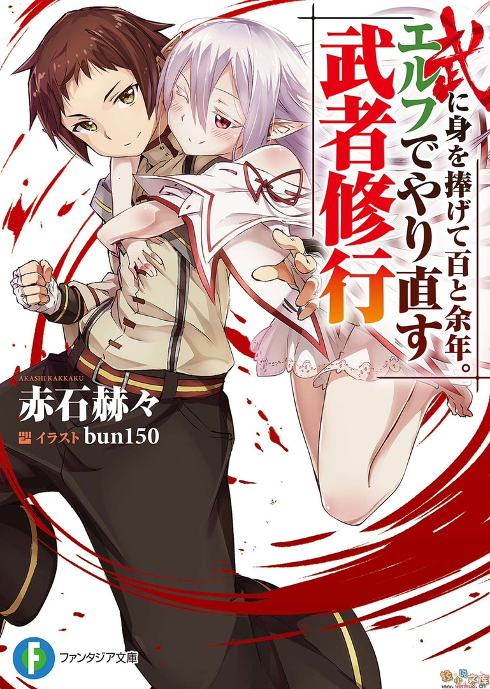

Прожить 100 лет и переродиться эльфом

Японское наименование: 武に身を捧げて百と余年
Английское наименование: Bu ni Mi o Sasagete Hyaku to Yonen. Elf de Yarinaosu Musha Shugyou
Автор: Акаши Каккаку
Издательство: Фантазия
Вид: Ранобэ
Статус: Продолжается
Перевод с английского: KanekiKen13
Редактор: Sae
Ретушь иллюстраций: Капрал Мурр
Английское наименование: Bu ni Mi o Sasagete Hyaku to Yonen. Elf de Yarinaosu Musha Shugyou
Автор: Акаши Каккаку
Издательство: Фантазия
Вид: Ранобэ
Статус: Продолжается
Перевод с английского: KanekiKen13
Редактор: Sae
Ретушь иллюстраций: Капрал Мурр
Аннотация:
Слава, посвятивший всю свою жизнь боевым искусствам, взял ученика-иностранца. Непобеждённый мастер проиграл только одно сражение. С возрастом его тело стало слабеть, ведь он уже прожил целый век. Пока он лежал в кровати и сожалел о своих поступках за всю жизнь, ученица ухаживала за ним всё это время.
Она вдруг сказала: "Йоши, Папа". Это заставило Славу смутиться из-за одного лишь слова. Сожалея о том, что не смог познать жизнь, поскольку всего себя посвятил боевым искусствам, мастер переродился в другом обличии, в образе долгожителя-эльфа, и начал жить заново, но вдруг...
- Учитель… Учитель?!
- Кто?.. Похоже, ты меня с кем-то спутала!